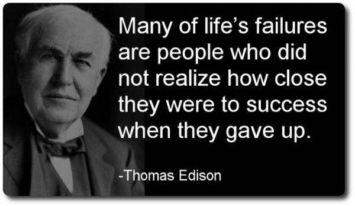

Considering Arnold Schwarzenegger is the epitome of the self-made man, we wouldn’t dare
exclude him from our success stories collection. Having been born and raised in Austria,
at a time where it was still healing from it’s defeat in World War II, the odds were
already stacked against him.Arnold grew up in a climate where alcoholism was rampant,
where defeatism was the norm, and big dreaming was laughed at.But Arnold didn’t care.
He knew he didn’t want to live the traditional Austrian life his parents wanted for him,
and he knew he wanted to move to America, the land of the free.As such, he hatched a plan
to become a success in body-building, and then use that success to get into movies.
And sure enough he did just that. He went on to fulfill his vision by becoming the
youngest man to ever win a Mr. Universe competition, and then on to win five Mr. Universe
titles and seven Mr. Olympia titles. After reaching what he set out to do in the sport of
bodybuilding, he then went on to commit himself to the acting career he had always dreamed of.
And sure enough, he would go on to conquer the film industry to the same degree that he that
he conquered the body building world. Going on to star in multiple blockbuster movies
that would gross over $3 billion, and earn him one of the most sizeable net worth’s in
Hollywood.
Sunder Pichai born in Madurai, 1972, belonged to a lower-middle-class family. He had never experienced the luxury of life. However, Pichai experienced his first technology at the age of 12. This was a landline phone that his father brought home. He had a remarkable skill of remembering numbers.
Likewise, he excelled in school, that paved in his way into metallurgy division of IIT, Kharagpur in India. Then after graduating he migrated to US in 1993. And initially planned to pursue Ph.D. from Stanford and embark on an academic career.
However, he dropped a plan and joined line of materials, a semi-conductor maker as an engineer and a product manager. But he didn’t work there for long. He later went to pursue MBA from Wharton university of Pennsylvania where he was named Siebel scholar and palmer scholar following the completion of MBA. He later joined GOOGLE in 2004. And his entry was marked with a launched with a free mail service called ‘Gmail’. That resulted Sundar’s to be a Google’s pride. The day of launch coincided with 1st April – The April Fool’s Day. Google became the default search engine of Microsoft’s own search engine called ‘Bing’.
Sundar soon started working on various other products such as Google gears and google pack. The success of google toolbar searches gave him an idea of making google own browser. He discussed this idea to the CEO Eric Smith and he denied. As he thought developing a browser would be very expensive affair. However, he convinced the cofounders of Google, Larry Page and Sergey Brin, to launch Google’s own browser. The task and the responsibility were given in the hands of Sundar. He made sure to cover all the negative points of the other browsers, the problems users faced while browsing, to develop the fastest browser ever. And in 2008; Google launched their first yet world’s best browser – Google Chrome!
Chrome turned out to become a success far beyond anyone’s imagination. Chrome, defeating all its competitors such as Internet Explorer and Firefox, eventually became the No. 1 browser in the world. Due to such immense success, he became an internationally recognised figure. Later in 2008 Sunder was promoted as the Vice President of Product Development. By 2012, he became the Senior Vice President of chrome and apps. He stepped into the shoes of Andy Rubin as the overseer of all Android related products.
Due to his excellent track record, Sundar attracted a lot of attention of the other technology powerhouses. He was approached by Twitter to come on board as the new CEO of Twitter. Other than that, he was also considered to succeed Steve Ballmer as the CEO at Microsoft! Sundar Pichai was the CEO in waiting for a long time. Mr Larry Page had tremendous faith in his capabilities, his sheer Diplomacy and Entrepreneurial Skills. On 10 August 2015, Sundar Pichai was chosen as CEO of Google!
Nawazuddin Siddiqui born in 1974, in a family of 11 –parents and 9 brothers and sisters. He grew up in a small village of Budhana, Muzaffarnagar, UP, where education was very tough to get and only three things were known – wheat, sugarcane and guns. The fear of guns made his family, to search for a better livelihood. After moving out, the family had a decent living than earlier. He pursued his graduation from a university in Haridwar. And started working as a chemist in a petrochemical company in Baroda. There he found he wasn’t able to cope up, so he moved to Delhi and worked as a watchman at various places. In his search for work, he frequently visited theatres and plays, where he started to participate in them. He went on to join the National School of Drama (NSD) and graduated from it in 1996.
Later, he moved to Mumbai to try his luck in Bollywood. He walked from studio to studio, set to set, all day, finding himself doing only petty roles or the ones where he was just a part of a crowd. pay his rent. He walked every studio, stage, and wherever he could a chance and just became a part of a crowd.
Nawazuddin made his first debut as a terrorist in movie ‘Sarfarosh’ with famous actor Amir Khan. And then started following many small roles over next few years. Success didn’t come easily to him and he had to struggle for almost 12 years before becoming famous in Gangs of Wasseypur. That was the turning point of his acting career. Today, he is recognised as one of the most talented and versatile actors of Indian Film Industry.
Steve Jobs was born in 1955 in San Francisco, was adopted by Paul and Clara Jobs. They always loved him like their own kid. His father showed Steve how to work on electronics in the family garage, demonstrating to his son how to take apart and rebuild electronics such as radios and televisions. As a result, Steve became interested in and developed a hobby of technical tinkering. Clara was an accountant who taught him to read before he went to school.
Jobs’s youth was riddled with frustrations over formal schooling. Jobs attended a local school in California He was such a prodigy that his teachers suggested he skip several grades, a suggestion his parents rejected. He was characterised by excellent test results and potential. But he struggled with formal education and his teachers reported he was a handful to teach.
Later he enrolled at Reed College, Portland, Oregon from where he dropped out after the first semester. But he continued attending the classes that interested him. One of them was calligraphy.
He got a job in Atari, a video game manufacturing company. He saved up and headed to India with his friend for ‘spiritual enlightenment’. They stayed there for 7 months, He completely transformed as a person. And returned home as a Buddhist.
In 1975 Jobs joined a group known as the Homebrew Computer Club. One member, a technical whiz named Steve Wozniak (1950–), was trying to build a small computer. Jobs became fascinated with the marketing potential of such a computer. In 1976 he and Wozniak formed their own company. They called it Apple Computer Company. Over the next few years, Apple computers expanded rapidly as the market for home computers began to become increasingly significant. They raised $1,300 in startup money by selling Jobs’s microbus and Wozniak’s calculator. Jobs was worth $1 million when he was 23, $10 million at 24 and crossed $100 million by the time he was 25. He was the one of the youngest people to be featured on the Forbes list of the country’s richest people
Today, he is known as the father of the digital revolution.

One day Thomas Edison came home and gave a paper to his mother. He told her, “My teacher gave this paper to me and told me to only give it to my mother.”
His mother’s eyes were tearful as she read the letter out loud to her child: Your son is a genius. This school is too small for him and doesn’t have enough good teachers for training him. Please teach him yourself.
After many, many years, after Edison’s mother died and he was now one of the greatest inventors of the century, one day he was lookin
g through old family things. Suddenly he saw a folded paper in the corner of a drawer in a desk. He took it and opened it up.
On the paper was written: Your son is addled [mentally ill]. We won’t let him come to school any more.
Edison cried for hours and then he wrote in his diary: “Thomas Alva Edison was an addled child that, by a hero mother, became the genius of the century.”
Never Give up. Be confident. Remember – (be it life, sports, career or any competition) – any battle is won twice – FIRST IN YOUR HEAD…….
India is a country where cricket is the most popular sport in the country. The fans and supporters put a lot of pressure on players who play for the Indian cricket team. Virat Kohli is widely considered one of the finest batsmen in cricket history. In every match, he regularly performs at a high level. His enthusiasm for the game is truly inspiring.
For all Indians, he is also known as a fitness icon. In cricket, reaching great heights is never simple. Many Indians aspire to be part of the Indian cricket team. Despite the fierce competition, Virat Kohli is the Indian cricket team’s skipper today. Virat Kohli has been a steady performer for India since 2013, collecting hundreds and match-winning runs.
When M.S. Dhoni resigned from Test cricket in 2014, and Virat assumed command of the Indian Test team. When M.S. Dhoni stood down as captain, and Virat was named captain of the ODI and T20 teams. In his career, Virat owns numerous records and milestones. He still has a lot more records to break. At this age, he is regarded as the best batsman.
Since 2013, Virat has been dating Bollywood actress Anushka Sharma. On the 11th of December 2017, Virat and Anushka married in Florence, Italy. Virushka is the nickname given to this pair. Virat has endorsement deals with major brands such as Audi, Manyavar, Puma, Wrogn, MRF tyres, and many others. Virat Kohli is the only cricketer to make Forbes’ list of the world’s top 100 highest-paid athletes.
Jeff was born in Mexico to a teenager mother, Jacklyn and father Ted Jorgense. The marriage just continued for over a year. She later remarried to Miguel Bezos in 1968. Jeff was 4 years old at that time. As Jeff grew up he had developed an interest in computer science. After completing his graduation, he got offers from Intel and Bell labs. Jeff denied them all. He joined a startup- Fitel but later decided to quit and join Bankers Trust. By the age of 30, Jeff Bezos was already drawing a six figure salary. Many would call him a successful person but he had other plans. One day while surfing through the internet, he found that the world of web is growing by 2300%. Moving out of his comfort zone, he left his lucrative job at DE Shaw and Company and started his own company.
Why Amazon is successful? The determination that went into accomplishing this dream is momentous. Amazon came into existence through ceaseless and constant quest for building a quality organization. Amazon was built on the pillars of strength of character, single minded focus and a will to provide the highest consumer experience to every person associated with the company.
Jeff Bezos went onto to build a web retailing system while the world was still wondering how an internet can function. The key focus for Amazon has never been to defeat competitors. Rather it focuses on helping consumers and building a value for them. This keeps them engrossed in implementing their plans and policies.
Elon Musk was born in South Africa in the early 1970s to a mother who was a nutritionist and a father who was an engineer. In an interview with Rolling Stone, Musk recalls how, as a child, he saw little of his parents and spent most of his free time reading and messing around with projects, “I didn’t really have a primary nanny or anything,” Musk says. “I just had a housekeeper who was there to make sure I didn’t break anything. She wasn’t, like, watching me. I was off making explosives and reading books and building rockets and doing things that could have gotten me killed. I’m shocked that I have all my fingers. I was raised by books. Books, and then my parents.”
From a young age, Musk became a fan of Isacc Asimov’s books, gradually inspiring his interest in futurism while his father’s career path cultivated his eye for design.
In 1997, Musk graduated from the University of Pennsylvania with a Bachelor of Science degree in economics and a Bachelor of Arts degree in physics, having transferred from Queen’s University in Kingston, Ontario. Musk financed his own university education, through a combination of scholarships, loans, and working two jobs alongside his studies.
After graduating, Musk moved on to a PhD programme at Stanford but made the decision to drop out just two days after the programme began to pursue his entrepreneurial visions.
In 2004, Musk played a crucial role in designing the first electric car of Tesla. Under his leadership, Tesla became out to become the world’s most popular and desirable car brand. In an interview, Musk stated 2008 as the worst year of his life. With the financial crisis, he pulled out Tesla from massive debt. Along with that, he was undergoing a divorce procedure.
In January 2018, Tesla revealed that Musk would not collect an annual payment. Instead, it would raise money depending on the rising market cap that it wanted to achieve in the next ten years.
His first rocked launch with SpaceX failed but he did not lose hope. On their fourth attempt, the project succeeded. They got a deal from NASA and from there is no turning back. They are the first private company to send a spacecraft to International Space Station.
Today, Elon Musk is the second richest man in the world. His net worth is $185.8 B. He went from being a small entrepreneur to becoming the leader of various innovative companies. He decided to rise and never settle down for anything less. Elon Musk is an immigrant and his success story is inspiring to many around the world.